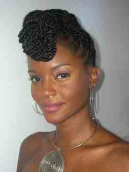
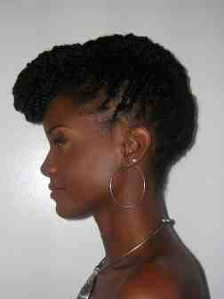

Up Do
 This is Felicia Underwoods tutorial on how to achive the look shown above
You will need; 3-4 hair pins, 4-5 bobby pins, Temple Balm by Organic Roots, IC Hair Polisher Mist, Edge Grooming Brush
- Start at the nap or back area of head. Start by wrapping a small section of the doubl strand twist upward toward the crown of the head, like a French Roll.
- Half way up the head, right around where the ears point, you want to secure the rolled portion with a hair & bobby pin. Use one hair pin first, followed by a bobby pin
- After securing the hair that is at the half way point of the head, continue to french roll the rest of the hair and secure with a hair pin and bobby pin. Depending on how thick your hair is, you may have to use more than one.
- As you reach the front of the head you will start to fold the front section, by rolling the hair around the front of forehead, tuck and securing with pins. Be sure not to pull hair too tight around hair line because you do not want it to break-off.
- Finish the Up-do style by placing a small amount of Temple Balm around the hairline to strengthen the edges. Use the Edge Grooming brush to brush down loose hairs and distribute the Temple Balm on the hairline. Finally, spray IC Hair Polisher Mist for shine and sun-protection. You can add a flower or head-band, hair jewelry, etc. to accentuate the style.